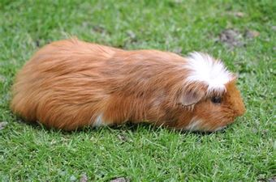
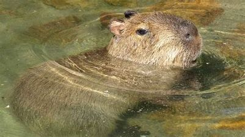

Obecné informace
Přirozeně žijí v Jižní Americe, domestikovaní po celém světě.
Velká hlava, velké oči.
Zástupci
Morče domácí
Kapybara vodní
Morče domácí
Domestikovaná forma jihoafrického morčete.
Hodně šlechtěné – různé barevní kombinace apod.
Živí se trávou, senem.

Kapybara vodní
Žije v tropických krajích Jižní Ameriky.
Živí se vodními rostlinami a kůrou stromů.
Největší žijící druh hlodavce, až 80kg, délka těla 1,3m a výška 55cm.
